Пример 11

Правильная область: Правое бедро. Выбор модели: Левое бедро. Ошибка выбора области.
Оценки модели: Позвоночник: 0.0%; Левое бедро: 98.8%; Правое бедро: 1.2%. Это оценки уверенности, а не гарантия правильности.
Тестовый эксперимент: 15 000 аугментированных изображений, четыре нейросети, по пять эпох обучения на GPU. Проверка качества — на 100 исходных снимках из 19 исследований вне обучения. Это первая рабочая версия; некоторые проверки пока ошибаются часто.
Важно: отсутствие найденной точки может означать как отсутствие структуры на снимке, так и ошибку модели. Сейчас это одна из главных причин ложных тревог.
В каждом модуле по пять реальных снимков из отложенной части. Для геометрических модулей область тела задана правильно вручную, чтобы отдельно увидеть качество самого модуля. Полные проходы ниже используют реальный выбор маршрутизатора. Примеры взяты по фиксированному правилу из разных частей списка; это иллюстрации, а не дополнительная тестовая выборка.
Правильная область: Правое бедро. Выбор модели: Левое бедро. Ошибка выбора области.
Оценки модели: Позвоночник: 0.0%; Левое бедро: 98.8%; Правое бедро: 1.2%. Это оценки уверенности, а не гарантия правильности.

Правильная область: Позвоночник. Выбор модели: Позвоночник. Верно.
Оценки модели: Позвоночник: 100.0%; Левое бедро: 0.0%; Правое бедро: 0.0%. Это оценки уверенности, а не гарантия правильности.

Правильная область: Левое бедро. Выбор модели: Левое бедро. Верно.
Оценки модели: Позвоночник: 0.0%; Левое бедро: 99.8%; Правое бедро: 0.2%. Это оценки уверенности, а не гарантия правильности.

Правильная область: Левое бедро. Выбор модели: Левое бедро. Верно.
Оценки модели: Позвоночник: 0.0%; Левое бедро: 100.0%; Правое бедро: 0.0%. Это оценки уверенности, а не гарантия правильности.

Правильная область: Позвоночник. Выбор модели: Позвоночник. Верно.
Оценки модели: Позвоночник: 100.0%; Левое бедро: 0.0%; Правое бедро: 0.0%. Это оценки уверенности, а не гарантия правильности.

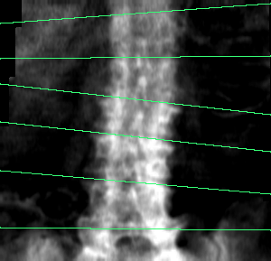

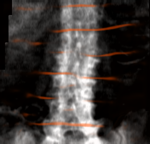
Число линий: эталон 6, модель 4. Низкий Dice линий означает, что их положение и толщина ещё плохо совпадают с эталоном.


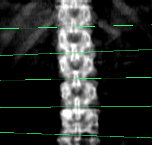
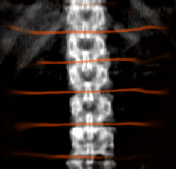
Число линий: эталон 6, модель 5. Низкий Dice линий означает, что их положение и толщина ещё плохо совпадают с эталоном.

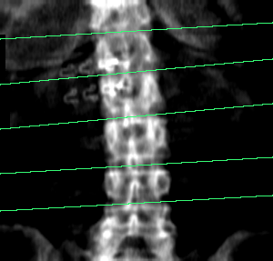
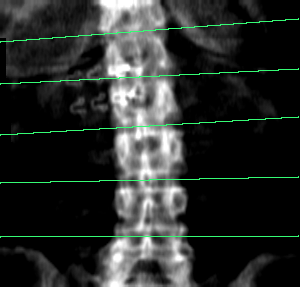
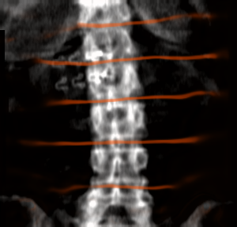
Число линий: эталон 5, модель 5. Низкий Dice линий означает, что их положение и толщина ещё плохо совпадают с эталоном.

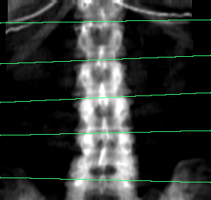
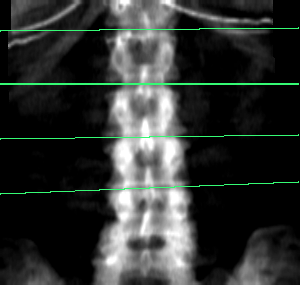
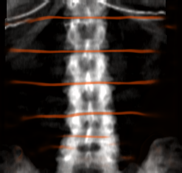
Число линий: эталон 5, модель 4. Низкий Dice линий означает, что их положение и толщина ещё плохо совпадают с эталоном.

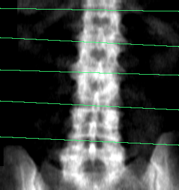
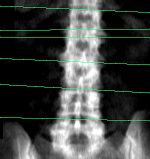
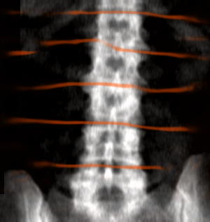
Число линий: эталон 5, модель 6. Низкий Dice линий означает, что их положение и толщина ещё плохо совпадают с эталоном.

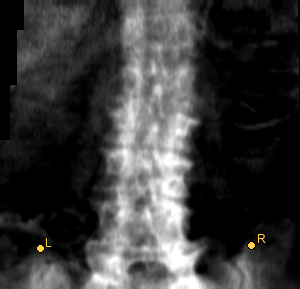
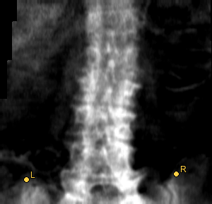
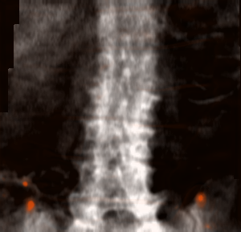
Найдено верхних точек: 2 из 2. Пропуски влияют на укладку.


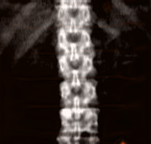
Найдено верхних точек: 1 из 2. Пропуски влияют на укладку.

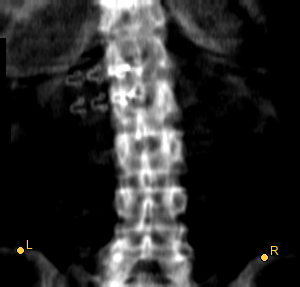
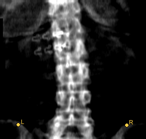
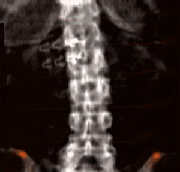
Найдено верхних точек: 2 из 2. Пропуски влияют на укладку.

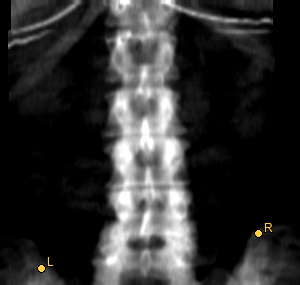
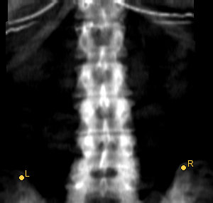
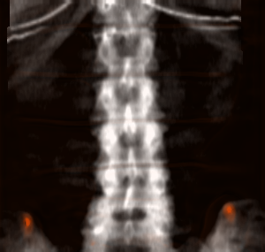
Найдено верхних точек: 2 из 2. Пропуски влияют на укладку.


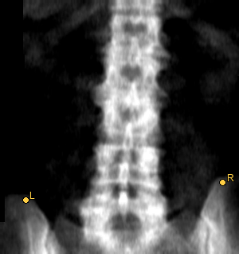
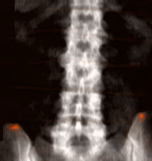
Найдено верхних точек: 2 из 2. Пропуски влияют на укладку.


Рамок: эталон 0, модель 0. Метка наличия артефакта и точность всех рамок — разные проверки.


Рамок: эталон 0, модель 0. Метка наличия артефакта и точность всех рамок — разные проверки.

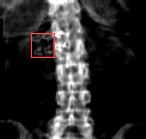
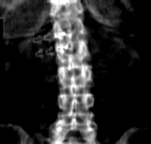
Рамок: эталон 1, модель 0. Метка наличия артефакта и точность всех рамок — разные проверки.
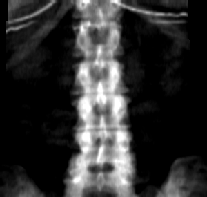
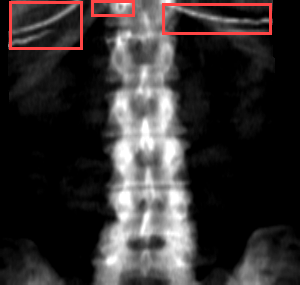
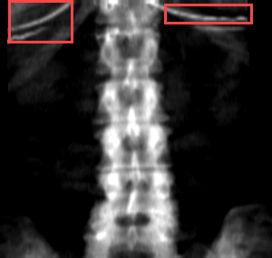
Рамок: эталон 3, модель 2. Метка наличия артефакта и точность всех рамок — разные проверки.

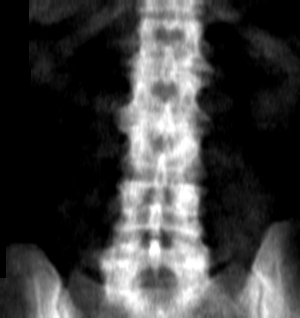

Рамок: эталон 0, модель 0. Метка наличия артефакта и точность всех рамок — разные проверки.
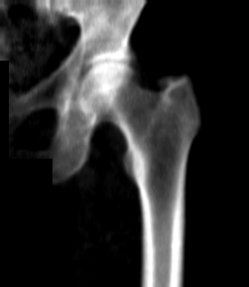
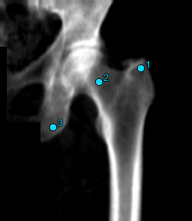

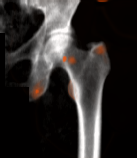
Найдено опорных точек: 3 из 3. 1 — большой вертел, 2 — шейка, 3 — седалищная кость.
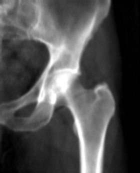

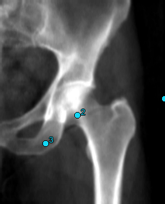
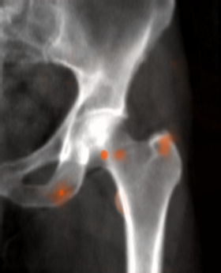
Найдено опорных точек: 3 из 3. 1 — большой вертел, 2 — шейка, 3 — седалищная кость.
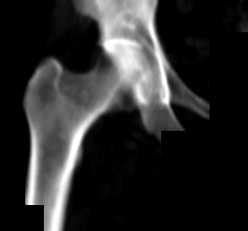

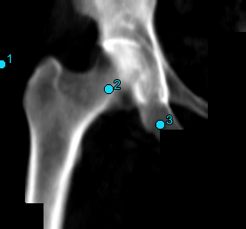
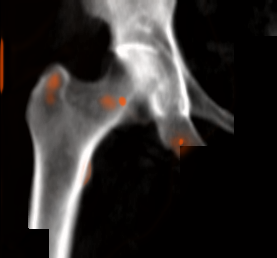
Найдено опорных точек: 3 из 3. 1 — большой вертел, 2 — шейка, 3 — седалищная кость.


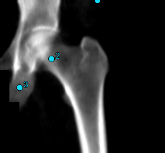
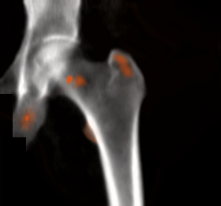
Найдено опорных точек: 3 из 3. 1 — большой вертел, 2 — шейка, 3 — седалищная кость.

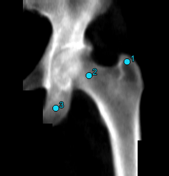
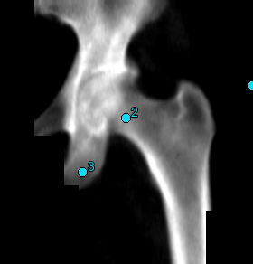
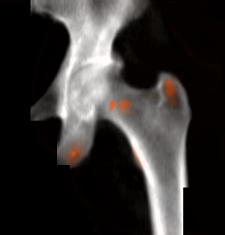
Найдено опорных точек: 3 из 3. 1 — большой вертел, 2 — шейка, 3 — седалищная кость.

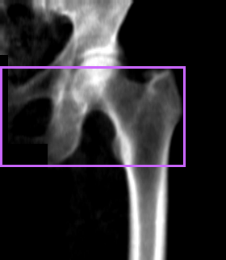

Отступы предсказанной области интереса (ROI): сверху: 9.69 см, снизу: 12.66 см, сбоку: 3.64 см. Порог: сверху/снизу 3 см, сбоку 2 см. Масштаб пикселя номинальный.


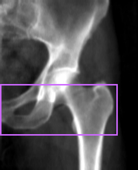
Отступы предсказанной области интереса (ROI): сверху: 17.98 см, снизу: 7.28 см, сбоку: 2.45 см. Порог: сверху/снизу 3 см, сбоку 2 см. Масштаб пикселя номинальный.

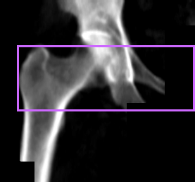
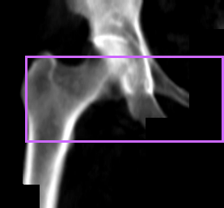
Отступы предсказанной области интереса (ROI): сверху: 7.30 см, снизу: 8.50 см, сбоку: 1.89 см. Порог: сверху/снизу 3 см, сбоку 2 см. Масштаб пикселя номинальный.
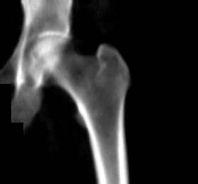
Отступы предсказанной области интереса (ROI): сверху: 6.44 см, снизу: 7.98 см, сбоку: 5.94 см. Порог: сверху/снизу 3 см, сбоку 2 см. Масштаб пикселя номинальный.

Отступы предсказанной области интереса (ROI): сверху: 10.01 см, снизу: 8.34 см, сбоку: 2.48 см. Порог: сверху/снизу 3 см, сбоку 2 см. Масштаб пикселя номинальный.


Площадь предсказанной маски: 364 пикселей; красная заливка — маска, красный пунктир в эталоне — контур при нулевой производной площади.

Площадь предсказанной маски: 204 пикселей; красная заливка — маска, красный пунктир в эталоне — контур при нулевой производной площади.

Площадь предсказанной маски: 113 пикселей; красная заливка — маска, красный пунктир в эталоне — контур при нулевой производной площади.

Площадь предсказанной маски: 257 пикселей; красная заливка — маска, красный пунктир в эталоне — контур при нулевой производной площади.
Площадь предсказанной маски: 134 пикселей; красная заливка — маска, красный пунктир в эталоне — контур при нулевой производной площади.
Все промежуточные изображения построены по выходам уже обученных моделей. Ручная разметка показана отдельно для сравнения. Ошибки не скрыты.
Истинная область: Правое бедро; модель выбрала: Левое бедро.


| Проверка | Эталон | Модель | Сравнение |
|---|---|---|---|
| Позиционирование бедра | норма | неопределённо | Нельзя сравнить: другая область / нет ответа |
| Отступы области интереса бедра | неопределённо | неопределённо | Нельзя сравнить: другая область / нет ответа |
| Ротация бедра | неопределённо | неопределённо | Нельзя сравнить: другая область / нет ответа |
Отступы области интереса (ROI): сверху: 8.90 см, снизу: 10.94 см, сбоку: 0.43 см.
Истинная область: Позвоночник; модель выбрала: Позвоночник.


| Проверка | Эталон | Модель | Сравнение |
|---|---|---|---|
| Укладка позвоночника | норма | нарушение | Ошибка |
| Наклон позвоночника | норма | норма | Верно |
| Артефакты позвоночника | норма | норма | Верно |
Наклон оси к вертикали: -3.2730124581347217°. Нарушение при |угол| > 5°.
Истинная область: Позвоночник; модель выбрала: Позвоночник.


| Проверка | Эталон | Модель | Сравнение |
|---|---|---|---|
| Укладка позвоночника | нарушение | нарушение | Верно |
| Наклон позвоночника | норма | норма | Верно |
| Артефакты позвоночника | норма | норма | Верно |
Наклон оси к вертикали: 1.8949978540383383°. Нарушение при |угол| > 5°.
Истинная область: Левое бедро; модель выбрала: Левое бедро.

| Проверка | Эталон | Модель | Сравнение |
|---|---|---|---|
| Позиционирование бедра | норма | нарушение | Ошибка |
| Отступы области интереса бедра | норма | норма | Верно |
| Ротация бедра | норма | норма | Верно |
Отступы области интереса (ROI): сверху: 9.69 см, снизу: 12.66 см, сбоку: 3.64 см.
Истинная область: Левое бедро; модель выбрала: Правое бедро.


| Проверка | Эталон | Модель | Сравнение |
|---|---|---|---|
| Позиционирование бедра | норма | неопределённо | Нельзя сравнить: другая область / нет ответа |
| Отступы области интереса бедра | норма | неопределённо | Нельзя сравнить: другая область / нет ответа |
| Ротация бедра | норма | неопределённо | Нельзя сравнить: другая область / нет ответа |
Отступы области интереса (ROI): сверху: 7.24 см, снизу: 10.76 см, сбоку: 0.00 см.
Во всех проверках положительный класс — нарушение (1). Слово «позитив» в плане аугментации, напротив, означало качественный снимок. Эти два значения нельзя смешивать.
| Метрика | Простыми словами | Как читать |
|---|---|---|
| Чувствительность (sensitivity) | Какую долю реальных нарушений нашли. | 1 — нашли все; 0 — пропустили все. Низкая чувствительность означает пропуски проблем. |
| Специфичность (specificity) | Какую долю качественных снимков признали качественными. | 1 — нет ложных тревог; около 0 — почти каждый хороший снимок ошибочно забракован. |
| F1-мера (F1) | Баланс между найденными нарушениями и ложными тревогами. | От 0 до 1, больше лучше. Даже высокая чувствительность не спасает F1 при множестве ложных тревог. |
| ROC AUC | Насколько хорошо оценка модели ставит проблемные снимки выше хороших. | 1 — идеальное ранжирование; 0,5 — случайный уровень. Высокий AUC не гарантирует хороший выбранный порог. |
| PR AUC / AP | Качество ранжирования при редких нарушениях. | Больше лучше; случайный ориентир зависит от доли нарушений. AP — вариант усреднения precision-recall, используемый здесь. |
| Сбалансированная точность (balanced accuracy) | Среднее чувствительности и специфичности. | 1 — идеально; 0,5 — случайный ориентир даже при дисбалансе классов. |
| Dice и IoU | Насколько совпали предсказанные пиксели или прямоугольники с эталоном. | 1 — полное совпадение, 0 — нет пересечения. Тонкие линии сильно штрафуются даже за небольшой сдвиг. |
| Ошибка точек (keypoint distance) | Расстояние от найденной точки до правильной. | Меньше лучше. Миллиметры здесь рассчитаны по номинальному размеру пикселя. |
| Покрытие (coverage) | Для какой доли снимков есть определённый ответ по проверке. | Низкое покрытие означает много ответов «неопределённо». Высокое качество на малой покрытой части может вводить в заблуждение. |
| 95% доверительный интервал (CI) | Насколько неопределённа оценка на этом небольшом наборе. | Широкий интервал означает мало информации. Это интервал метрики, а не вероятность диагноза конкретного снимка. |
100 файлов из 19 отложенных исследований. Метрики задач считаются только для определённых ответов; покрытие показывает исключённую долю. Исходные изображения содержат точные дубли внутри частей: 499 файлов, 263 уникальных массива; между train и validation точных дублей нет. Поэтому число файлов не равно числу независимых наблюдений. Интервалы получены повторной выборкой исследований, а не отдельных аугментаций.
| Область | Проверка | N ответов | Покрытие | Чувствительность | Специфичность | F1 [95% ДИ] | ROC AUC [95% ДИ] |
|---|---|---|---|---|---|---|---|
| Позвоночник | Укладка позвоночника | 28 | 80.0% | 1.000 | 0.667 | 0.500 [0.000; 0.800] | 0.917 [0.696; 1.000] |
| Позвоночник | Наклон позвоночника | 35 | 100.0% | 0.000 | 1.000 | 0.000 [0.000; 0.000] | 0.500 [0.279; 0.854] |
| Позвоночник | Артефакты позвоночника | 35 | 100.0% | 0.889 | 1.000 | 0.941 [0.625; 1.000] | 0.941 [0.697; 1.000] |
| Левое бедро | Позиционирование бедра | 32 | 97.0% | — | 0.031 | 0.000 [0.000; 0.000] | — |
| Левое бедро | Отступы области интереса бедра | 32 | 97.0% | 1.000 | 1.000 | 1.000 [1.000; 1.000] | 1.000 [1.000; 1.000] |
| Левое бедро | Ротация бедра | 32 | 97.0% | 0.500 | 1.000 | 0.667 [0.000; 1.000] | 0.750 [0.500; 1.000] |
| Правое бедро | Позиционирование бедра | 30 | 93.8% | — | 0.100 | 0.000 [0.000; 0.000] | — |
| Правое бедро | Отступы области интереса бедра | 30 | 100.0% | 1.000 | 1.000 | 1.000 [1.000; 1.000] | 1.000 [1.000; 1.000] |
| Правое бедро | Ротация бедра | 30 | 100.0% | 0.000 | 0.840 | 0.000 [0.000; 0.000] | 0.380 [0.197; 0.484] |
«—» означает, что метрика не определена, например в выборке нет реальных нарушений. Это не нулевая ошибка. Отдельное поле позиционирования бедра отсутствует у организаторов: его эталон вычислен по ручным точкам. Остальные бинарные эталоны — исправленные метки организаторов.
Определение области (router): правильно 97 из 100; macro-F1 = 0.969. Обработка файлов успешна для 100 из 100. Среднее время: 0.081 с, p95: 0.233 с на прогретых моделях.
| Модуль | Результат | Что это значит |
|---|---|---|
| Позвоночник (spine) | Dice линий 0,172; ошибка точек 12,7 мм | Линии совпадают плохо. Даже если некоторые итоговые ответы верны, геометрия ещё ненадёжна. |
| Бедро (hip) | Dice вертела 0,775; IoU ROI 0,914; ошибка точек 26,9 мм | Маска и прямоугольник лучше точек. Хорошая ROI не доказывает, что все анатомические структуры найдены. |
| Артефакты (artifact) | Recall рамок при IoU≥0,5: 0,379; precision: 0,862 | Найденные рамки чаще правильные, но многие эталонные объекты пропущены. Это совместимо с высоким F1 наличия хотя бы одного артефакта. |
135 производных снимков только от источников вне обучения. Не смешиваем эти результаты с исходными данными: преобразования и их метки искусственные, и не отражают всю сложность реальных случаев.
| Область | Проверка | N ответов | Покрытие | Чувствительность | Специфичность | F1 [95% ДИ] | ROC AUC [95% ДИ] |
|---|---|---|---|---|---|---|---|
| Позвоночник | Укладка позвоночника | 42 | 93.3% | 1.000 | 0.917 | 0.984 [0.979; 1.000] | 1.000 [1.000; 1.000] |
| Позвоночник | Наклон позвоночника | 43 | 95.6% | 1.000 | 1.000 | 1.000 [1.000; 1.000] | 1.000 [1.000; 1.000] |
| Позвоночник | Артефакты позвоночника | 45 | 100.0% | 0.133 | 1.000 | 0.235 [0.000; 1.000] | 0.633 [0.500; 1.000] |
| Левое бедро | Позиционирование бедра | 43 | 95.6% | 1.000 | 0.067 | 0.481 [0.250; 0.626] | 1.000 [1.000; 1.000] |
| Левое бедро | Отступы области интереса бедра | 43 | 95.6% | 0.962 | 1.000 | 0.980 [0.875; 1.000] | 1.000 [1.000; 1.000] |
| Левое бедро | Ротация бедра | 43 | 95.6% | 0.750 | 1.000 | 0.857 [0.000; 1.000] | 0.875 [0.500; 1.000] |
| Правое бедро | Позиционирование бедра | 42 | 93.3% | 1.000 | 0.033 | 0.453 [0.296; 0.685] | 1.000 [1.000; 1.000] |
| Правое бедро | Отступы области интереса бедра | 42 | 93.3% | 0.926 | 0.933 | 0.943 [0.892; 1.000] | 0.968 [0.900; 1.000] |
| Правое бедро | Ротация бедра | 42 | 97.7% | 0.235 | 0.920 | 0.348 [0.000; 0.946] | 0.614 [0.412; 1.000] |
Для любого нарушения в целом: F1=0,534 и ROC AUC=0,886 при покрытии 90%. Специфичность лишь 0,088 — система слишком часто бракует хорошие снимки. Пока это эксперимент для разработки, а не готовый контроль качества.
Замороженный ResNet18 для определения области; ResNet18 с U-Net декодерами для геометрии; Faster R-CNN MobileNetV3 FPN для артефактов. Размер входа 256×256, пять эпох. Следующий вариант кода: ResNet50 с теми же выходами и Faster R-CNN ResNet50 FPN v2. Он проверен на исполняемость, но ещё не обучен.
Полные агрегированные метрики, PR AUC, balanced accuracy и интервалы · Итоговые ответы пяти полных примеров